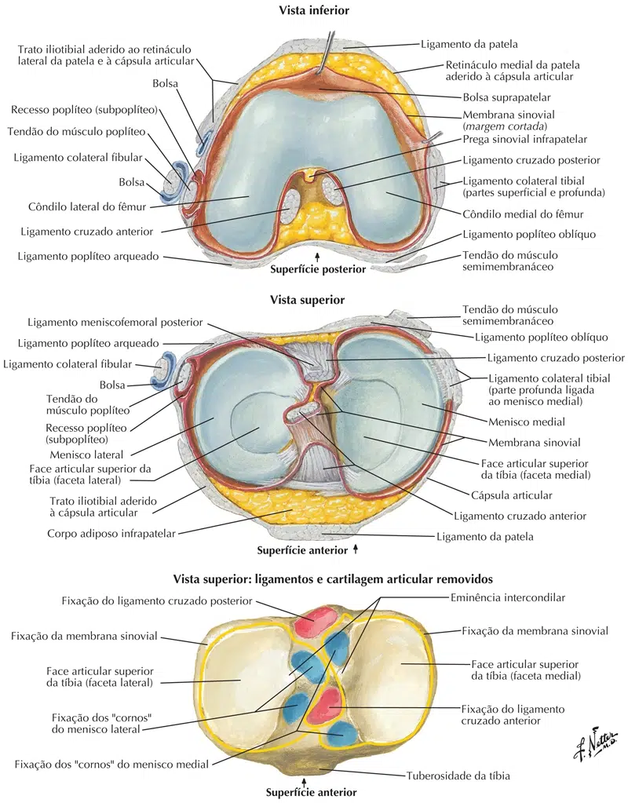

O ligamento cruzado anterior (LCA) é um ligamento intracapsular e extrasinovial e constituído por dois feixes distintos: ântero-medial e póstero-lateral, apesar de existir tensão no ligamento cruzado anterior em toda a amplitude de movimento tibiofemoral, o feixe ântero-medial fica mais tenso em flexão e o feixe póstero-lateral torna-se mais tenso em extensão.
O ligamento cruzado anterior (LCA) origina-se do aspecto da superfície medial do côndilo lateral do fêmur.
Logo após, o LCA avança anteriormente, medialmente e distalmente até inserir-se no platô tibial, anteriormente e lateralmente a espinha anterior da tíbia.
A inserção tibial desse ligamento geralmente mais forte e mais larga que a inserção femoral, porque o ligamento uma tendência a alargar-se em sua porção distal.
O LCA está fixado às superfícies femoral e tibial como um agregado de fascículos individuais, em vez de um cordão único e diferenciado.
NETTER: Frank H. Netter Atlas De Anatomia Humana. 7 ed. Rio de Janeiro: Elsevier, 2021.
Ligamento cruzado posterior
O ligamento cruzado posterior (LCP) se origina na face lateral do côndilo femoral medial em uma posição mais distal do que o ligamento cruzado anterior (LCA), em forma de semicírculo com três cm de largura e a sua inserção tibial se localiza na depressão superior da superfície articular da tíbia.
O ligamento cruzado posterior (LCP) é formado por duas porções: anterior de maior espessura, que tensiona em flexão e uma posterior, menor que tensiona em extensão.
A função primaria do ligamento cruzado posterior (LCP) é limitar as translações posteriores da tíbia sobre o fêmur, ajudar a controlar o estresse em varo e em valgo impostos ao joelho, porém é irrelevante a função do ligamento cruzado posterior (LCP) no controle das forças rotacionais.
NETTER: Frank H. Netter Atlas De Anatomia Humana. 7 ed. Rio de Janeiro: Elsevier, 2021.
Ligamento colateral medial
O ligamento colateral medial (LCM), ou ligamento colateral tibial, é um feixe membranoso, largo e achatado que se prolonga em direção à parte posterior da articulação.
Proximalmente insere-se no côndilo medial do fêmur, logo abaixo do tubérculo adutor e, distalmente, no côndilo medial e na face medial do corpo da tíbia.
O LCM proporciona a contenção primaria contra os estresses em valgo impostos no joelho, auxilia no controle das forças de torção da rotação interna, mas essa ação diminui quando o joelho é fletido. O LCM controla a rotação externa excessiva.
NETTER: Frank H. Netter Atlas De Anatomia Humana. 7 ed. Rio de Janeiro: Elsevier, 2021.
Ligamento colateral lateral
O ligamento colateral lateral (LCL), ou ligamento colateral fibular, é um cordão fibroso, arredondado e forte, que se insere na parte posterior do côndilo lateral do fêmur, acima do sulco do tendão poplíteo, na face lateral da cabeça da fíbula e anteriormente ao processo escafóide.
Sua maior parte da face lateral esta coberta pelo tendão do bíceps femoral, onde sua inserção se divide em duas partes, que são separadas pelo ligamento.
Profundamente a este ligamento estão o tendão do músculo poplíteo, nervo e vasos laterais inferiores do joelho, porem o LCL não se insere ao menisco lateral.
NETTER: Frank H. Netter Atlas De Anatomia Humana. 7 ed. Rio de Janeiro: Elsevier, 2021.

NETTER: Frank H. Netter Atlas De Anatomia Humana. 7 ed. Rio de Janeiro: Elsevier, 2021.